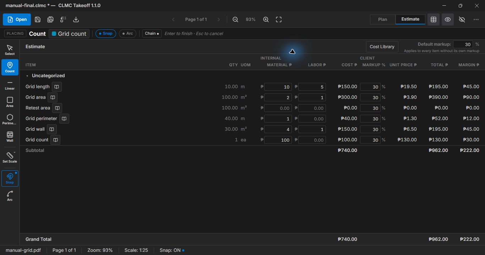
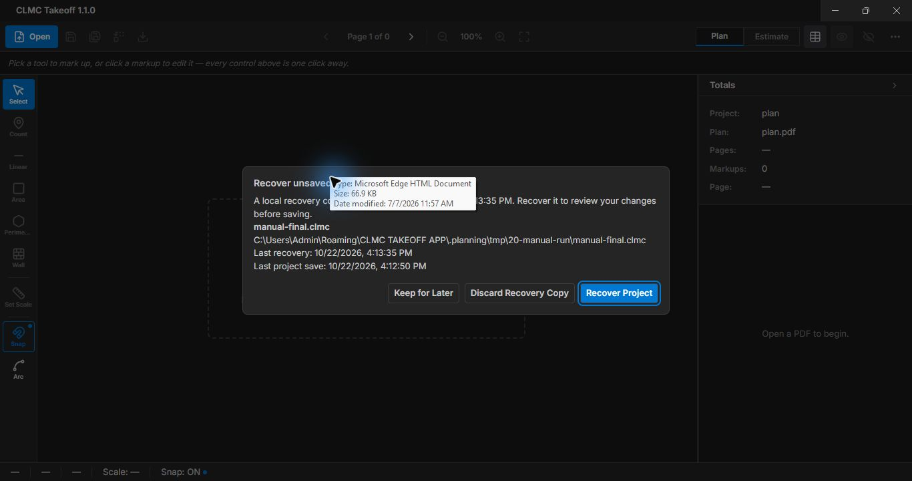

CLMC TAKEOFF · VERSION 1.1.0 · INTERNAL TRIAL GUIDE · 23 OCTOBER 2026
From plan to priced quantities
Open this file in a browser on your PC. The guide, pictures and example files work without internet. The app’s core takeoff, project saving and internal exports also work offline.
This is a training guide for the current trial candidate. Second-PC acceptance, representative construction-plan checks, physical display checks and release ownership are still pending. Example prices are training values in PHP. Exports contain internal material cost, labor cost and margin; review them before sharing outside the team.
1. Get started
- Run the approved full Windows x64 installer under your normal Windows account. Follow your team’s installer approval process. Launch CLMC Takeoff; no development server is needed.
- Open More → About and check version 1.1.0. Release notes are available there without internet.
- Choose Open for a PDF or a saved
.clmc project. Save your own working copy in a folder you can write to. - Use Plan to measure and Estimate to review quantities and prices. The left tool rail provides Select, Count, Linear, Area, Perimeter, Wall, Set Scale, Snap and Arc. Pan with the middle mouse button, or hold Space while dragging with the left button. Hold Ctrl while scrolling to zoom.
Calibrate each measured page against a known dimension. Choose Set Scale, click the two ends of that dimension, enter the real-world distance and its unit, then choose Confirm. Open the arrow beside Set Scale and choose Verify scale to check another known dimension; use Recalibrate if needed. A drawing’s printed scale is useful context; check an actual known dimension before pricing.
2. Worked example: a 10 m square
The supplied training PDF is a generated grid, not an approved construction plan. The bold square measures 10 m × 10 m. Its ten subdivisions each represent 1 m after calibration. The whole bold side is the calibration span.
For a quick comparison, open the completed project in CLMC using Open. It includes the PDF, geometry, scale and saved prices. The completed project was saved through the installed app; its geometry and export values were checked separately.
- To practise from scratch, open the training PDF. Calibrate a complete bold side as 10 m. Keep snapping on and check the highlighted target before each click.
- Draw a Linear measurement along a full side: 10 m.
- Draw an Area around all four corners: 100 m². Draw a second copy named Retest area only if reproducing the supplied six-row project; this extra training row has zero rates.
- Trace the four corners with Perimeter: 40 m. The boundary closes automatically.
- Draw a Wall along one complete side and set height to 3000 mm: 30 m².
- Place one Count pin: 1 ea. Name the rows as shown below. In Estimate enter the material and labor unit rates, with 30% markup. Leave each edited cell to commit its value.
- Save As a new project, reopen it, compare Estimate and export both formats. The supplied Excel and CSV are comparison outputs.
Cost = quantity × (material unit rate + labor unit rate). Selling total = cost × 1.30. Markup is a percentage of cost; 30% markup does not mean a 30% margin on sales.

Actual installed-app estimate. The unpriced extra area is intentional training data.
- Count: choose a name/category and start placing pins. Each click adds one item. Escape leaves placement.
- Linear / Wall: click successive points, then press Enter after at least two points. Wall area uses the measured length and entered height.
- Area / Perimeter: click at least three boundary vertices and press Enter. Do not cross the boundary over itself. Area measures the enclosed surface; Perimeter measures the closed outline length.
- Snap: F3 toggles snapping; hold Alt to suspend it temporarily. Verify the intended landmark rather than assuming every nearby point is correct.
- Arc: hold A for an arc edge or use Shift+A / the Arc toggle for repeated curved edges. Check the curve against the plan before committing.
- Select: click a line or boundary markup to show its vertex handles, then drag a handle to correct a point; Enter finishes vertex editing and Escape cancels the active edit. Ctrl+Z undoes a placed vertex during drawing or a committed action. Delete removes selected markups when a text field is not active.
- Check names, type, page, scale, wall height and units in the totals and properties panels. Confirm that markups stay registered as you pan, zoom and reopen.
New files keep geometry in a fixed PDF coordinate system. An older project without verified geometry opens with review safeguards: inspect every affected page, correct displaced shapes and recalibrate before confirming. Export stays blocked until the required review is complete. Save an upgraded copy and retain the original.
4. Costs, libraries and units
In Estimate, enter material and labor unit rates and markup, then move focus out of the cell. Review the recomputed row and grand totals. A project-wide default markup change shows an impact confirmation; check it before accepting.
- Open Cost Library in Estimate. Choose Download Excel Template for the supported workbook layout.
- Keep the worksheet named Cost Library. Required columns are Item Code, Description, Category, Unit, Material Unit Rate and Labor Unit Rate. Use unique item codes as text, numeric nonnegative PHP rates, and 0 for a rate that does not apply. Supported units are ea, mm, cm, m, in, ft and mm², cm², m², in², ft². Use plain values rather than formulas; export only this worksheet as UTF-8 comma-separated CSV if using CSV.
- Choose Import CSV / Excel. Review validation errors or the preview. Replace Library replaces the complete library on this PC; it does not silently update existing projects. Cancel Import leaves the existing library.
- For an Estimate row, use its library action to choose an item with a matching unit, then Apply Rates. This replaces material and labor rates for all items with the same name and type across categories. Check every affected row and total. Applying rates preserves the existing item names and selling markup.
You can edit the applied material/labor rates manually in Estimate and leave the cell to commit. Later library imports preserve these project values; explicitly applying library rates again replaces the material/labor overrides for that name and type.
The team maintains and checks its own rate file and imports updates on each PC. There is no central library sync. Project prices are saved snapshots. A project transferred to another PC keeps its applied rates even if that PC has no library.
Units matter: a rate per m differs from a rate per ft, and a rate per m² differs from a rate per ft². Applying a library item requires a matching unit. For reviewed project rates, changing display units converts the quantity and reciprocal unit rate so the money stays constant; check the result. Legacy prices require explicit rate-basis review. Acknowledging a warning does not establish whether old rates were correct.
5. Save, transfer and recover
Use Save As for a new project or a separate working copy. Save updates the current project. A successful replacement retains one last-good adjacent .clmc.bak. It is one backup, not a full revision history. Copy the project and backup to your team’s approved backup location separately.
The current .clmc format contains the PDF and saved takeoff/prices. Transfer only that project file to another PC and open it there. Older external-PDF projects still need their original PDF to upgrade. Keep originals when using Save Upgraded Copy; older app versions may not read the newer format.
Dirty work is captured for recovery about every 60 seconds. Changes after the last completed capture may be lost. After an interrupted session, choose Recover or Keep for Later. Recovered work is still unsaved; inspect it, then save explicitly. Never-saved recovery requires Save As. More → Recover Unsaved Work reopens available recovery choices. Discard is deliberate and asks for confirmation.
Recovery is limited to 20 completed candidates and 4 GiB of local repository data; warnings require attention. A failed save leaves work unsaved: use Retry for the failed destination or save a separate copy in a writable folder. Do not close until your successful save is confirmed. A valid backup opens detached and must be saved as another project.

Recovery offers a completed snapshot; its timestamp identifies the protected revision.
6. Export an internal estimate
Choose Export and select Excel or CSV. Check the exported quantities, material/labor cost, markup, unit price, total and margin. These are internal outputs; client quotation templates are deferred.
Open XLSX directly in Excel. If CSV columns or m² text look wrong, use Excel’s text/CSV import with UTF-8 encoding and a comma delimiter. Regional settings can interpret a double-clicked CSV differently. Verify totals against Estimate and keep the saved project as the editable source.
7. Keyboard reference
File, undo, selection and delete shortcuts defer to text fields. Finish editing a cell before using zoom or page-navigation keys, or use the visible toolbar buttons. F3 remains available while typing. Dialogs take focus; Tab and Shift+Tab move through their controls.
8. Troubleshooting and support
- Missing example, picture or broken link: keep the complete guide folder together. Recopy the verified kit if a file is missing. Open index.html from that folder; moving just the HTML file separates it from its examples and images.
- Wrong quantity: verify the page’s known distance, scale unit, selected tool type, boundary vertices and wall height. Compare against a separate calculation before pricing.
- Save failed: keep the app open, check the destination and available space, close programs locking that disposable target, and retry or save a copy elsewhere. Keep the original and backup.
- Import rejected or slow: use the app template, correct the reported row/column and retry. Supported CSV/XLSX files are limited to 10 MiB and 10,000 data rows; complex workbooks can be rejected by safety limits. Export plain values to a smaller file. A failed import does not replace the prior library.
- Blank or slow PDF: wait for the current page, try another page, then reopen a working copy. Report the PDF’s size/pages and whether it is scanned. Do not assume a generated training grid proves performance on a large drawing.
- Export disabled: complete required legacy geometry and rate-basis reviews. Do not acknowledge unverified measurements simply to unlock export.
- Report a problem: record About version, Windows/display scaling, steps, expected versus actual result, screenshot and a disposable sample project if permitted. Support contact pending assignment; ask the internal release owner to identify the designated contact before the pilot.